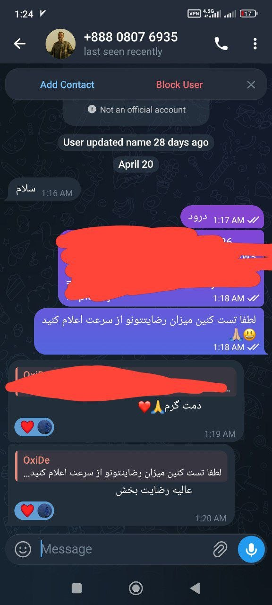

@iP_CF
آموزش جدید پروژه Mhr
بردن پشت کلودفلر
لینک گیت هاب :
https://github.com/denuitt1/mhr-cfw
محدودیت ریکوست روزانه ۱۰۰ هزار نیازی به خرید سرور نداره و کاملا رایگانه
🤍 More : @IP_CF_Configs
🤍 Group : @IP_CF_Configs_Gap
Open on TelegramOpen Single Pageسایت TradingView
در لیست سفید قرار گرفت
روی اکثر اپراتور ها باز شده
tradingview.com
🤍 More : @IP_CF_Configs
🤍 Group : @IP_CF_Configs_Gap
Open on TelegramOpen Single Pageپروکسی #سایفون
Host : 5.62.177.54
Port : 10808
Host : 65.109.93.236
Port : 8080
🤍 More : @IP_CF_Configs
🤍 Group : @IP_CF_Configs_Gap
Open on TelegramOpen Single Page
نسخه ویندوز
MasterHttpRelayRust v1.8.0
🌐 لینک گیتهاب :
https://github.com/therealaleph/MasterHttpRelayVPN-RUST/releases/download/v1.8.0/mhrv-rs-windows-amd64.zip
📥 لینک دانلود با نت داخلی
https://abhm.ir/u7FGMY
🤍 More : @IP_CF_Configs
🤍 Group : @IP_CF_Configs_Gap
Open on TelegramOpen Single Page✅کانفیگ اختصاصی موجود شد
کانفیگ تکی گیگی 300 تومان
اوتباند (حداقل خرید 30 گیگ) گیگی 250 تومن
🔥مناسب تمامی اپراتورها
🔥کیفیت فوقالعاده بالا
🔥ضمانت اتصال تا آخرین روز
🔥تضمین بازگشت وجه
🔥دارای ساب لینک
🔥بدون ضریب و محدودیت زمانی و کاربر
(متاسفانه بدلیل محدودیت ها امکان ارائه تست نیست)
قیمت فوق العاده مناسب.
بــرای خرید از طریق ربات اقدام بفرمایید.
@IP_CF_CONFIG2_BOT
Open on TelegramOpen Single Pageslipnet-enc://AQlV3GSfpvAq6yvpBu1IoDATczK1kz7xd7PxSp5U4EMQU9pjc4hXNx3IsogtrPfiT7RIMf1PFIZCCT/liSBbQuQPKldGE3gY3EDamnlcNv0jTk5l+vUnCgU5tGgj1ZwLNZa+1QaKwZZoHRW3bTVZX3ZAxjcPDsJSAcoHiNN7BeXDLJrhTpI1keeocQjrXeIuxjCWI3/39++yBmJuwJsk5qvsemhXNKUKf4eK1ZzzUXwYS7FF1IEPvV6fH9b3ksKJCceiyKLl5yrpyF7gHfqUD+3Xg60tty3CHya1teBWGWpvZGxLEKQ6aqFgQZ+Z3yOgVoUlfisYibBIqLb9FtqqLp7loKjKDViO7IOXsdfRWpSnTITjzvNjhbV3py9j4DuFarxaT1syoXPY0VlKKDhQO0Bd/nGT2t7Um1oKH89+4UUP+XBv1BS1DuFjYK3Dl/V6DB02qv4Jf5tOkXZRQvrf7wWFGHmYDoezdFLt9yRz0bb1zasJdyYTNN0X0Dg42fQ9OKSnOBIDIuMwA7GcHePCYnN9RXoiMEmfmNhm8EXqtxpuOZYHt9PEq5pa8Baa0FI2tNCNymxb0totCj9Joq78sEESKMlW79gF1TNmEeGYx8B0Pb7Xs12GEYkM6a+O5IRPwOJz
تست شده✅
#OxiDe
🤍 More : @IP_CF
🤍 Group : @IP_CF_GROUP
Open on TelegramOpen Single Pageخرید و فروش در گروه ممنوع هست
هر شخصی اسمی بیاره از خرید و فروش بلاک میشه
تنها راه خرید اونم با ضمانت از طریق آیدی چنل هست
@iPCF_Support
خرید از هرکسی به جز این آیدی که آیدی فروشگاه چنل هست. تحت هیچ شرایطی قابل قبول برای ما نیست ، فردا برگردین این توی چنل شما بود پولمون خورد و فلان
همون ادم هم بلاک میشه
این حرف برای بار اخر زده میشه و چیزی دیده شه شخص بلاک میشه.
فرقی هم نمیکنه کاربر باشه یا ادمین
:Rango
Open on TelegramOpen Single Page🔴 اختلال - تلگرام بدون فیلتر مناطقی
شیراز ، تبریز ، اورمیه ، اردبیل ، ایلام ، زنجان ، کردستان ؛ مرند ، پارس آباد ، گیلان ، رشت گزارش شده
#OxiDe
🤍 More : @IP_CF
🤍 Group : @IP_CF_GROUP
Open on TelegramOpen Single Page
تقدیم #جوایز به یکی از برنده های عزیزمون🙏🏼
متاسفانه دو برنده دیگه براشون ارسال کردیم اما جوابگوی پیاممون نبودن 🥶
تا چالشی دیگه بدروووود❤️
#OxiDe
Open on TelegramOpen Single Page🚨 گیتهاب در بیشتر نت ها و دیتاسنتر ها باز شده
سایت گیتهاب (GitHub) بهتازگی روی اینترنتهای مختلف و دیتاسنترها باز شده و در دسترس قرار گرفته اما ظاهراً ماجرا به همین سادگی نیست!
ترافیک سایتهای پرکاربرد برنامهنویسان مثل Github و Npmjs در حال حاضر بهجای اینکه از مسیر عادی و بینالمللی خارج شود، در داخل کشور به رنجهای داخلی (شبکه زیرساخت) هدایت میشود.
⚠️ این یعنی چه؟
این اتفاق به این معنیه که دیتای شما در حال عبور از یک مسیر دستکاریشده هستش. این نوع مسیریابی غیرطبیعی (Hijacking/Routing Manipulation) میتونه خطراتی برای امنیت دادهها داشته باشه یا نشاندهندهی پیادهسازی سیستمهای مانیتورینگ جدید روی ترافیک باشه (یا شایدم من دارم اشتباه میکنم).
Open on TelegramOpen Single Pageآموزش اشتراکگذاری اینترنت آزاد (V2ray/SNI-Spoofing) از لپتاپ به گوشی 📱💻
اگر روی لپتاپ خود با ابزارهایی مثل SNI-Spoofer یا V2ray به اینترنت آزاد وصل هستید و اینترنت لپتاپ را از طریق کابل (USB Tethering) گوشی تامین میکنید، با این روش میتوانید همان اینترنت بدون فیلتر را به گوشی خودتان برگردانید:
مرحله ۱: فعال کردن LAN در لپتاپ
در برنامه v2rayN روی لپتاپ، از پایین صفحه تیک گزینه Allow connections from LAN را بزنید. پورت SOCKS نوشته شده در پایین صفحه (معمولاً 10808 یا 10809) را به خاطر بسپارید.
مرحله ۲: پیدا کردن آیپی لپتاپ
۱. در ویندوز برنامه CMD را باز کنید.
۲. عبارت ipconfig را تایپ کرده و اینتر بزنید.
۳. در لیست باز شده، دنبال آداپتوری بگردید که مربوط به اتصال USB گوشی است (معمولاً به اسم Ethernet 2 یا Remote NDIS) و حتماً دارای Default Gateway است.
۴. عدد روبروی IPv4 Address را یادداشت کنید.
مرحله ۳: باز کردن پورت در فایروال ویندوز
برای اینکه ویندوز جلوی اتصال گوشی را نگیرد:
۱. برنامه PowerShell را جستجو کنید، روی آن راستکلیک کرده و Run as Administrator را بزنید.
۲. دستور زیر را کپی و پیست کرده و اینتر بزنید (اگر پورت V2ray شما در مرحله اول چیز دیگری بود، عدد 10808 را در این کد تغییر دهید):
New-NetFirewallRule -DisplayName "V2Ray LAN" -Direction Inbound -LocalPort 10808 -Protocol TCP -Action Allow
مرحله ۴: اتصال در گوشی
۱. در گوشی خود برنامه v2rayNG را باز کنید.
۲. روی علامت + (بالا سمت راست) بزنید و Type SOCKS (یا Add a Socks profile) را انتخاب کنید.
۳. در قسمت Address: آیپی لپتاپ (که در مرحله ۲ پیدا کردید) را وارد کنید.
۴. در قسمت Port: پورت لپتاپ (مثلاً 10808) را وارد کنید.
۵. کانفیگ را ذخیره کنید و دکمه اتصال را بزنید.
✅ حالا کل ترافیک گوشی شما از طریق کابل به لپتاپ میرود، از فیلترشکن لپتاپ عبور میکند و آزاد میشود!
#Fodi
Open on TelegramOpen Single Page FarahVPN | فراح وی پی ان
FarahVPN | فراح وی پی ان
 کریپتو و ایردراپ شیروانی
کریپتو و ایردراپ شیروانی
 CongNet VPN | کانگنت ویپیان
CongNet VPN | کانگنت ویپیان
 اطلاع رسانی Max VPN
اطلاع رسانی Max VPN
 Proxy MTProto | پروکسی
Proxy MTProto | پروکسی
 یـ بـ خـ
یـ بـ خـ
 ToxicVid | VPN
ToxicVid | VPN
 IVX
IVX
 کانفیگ vpn ویتوری نت ملی🇮🇷
کانفیگ vpn ویتوری نت ملی🇮🇷
 IP_CF | Channel
IP_CF | Channel